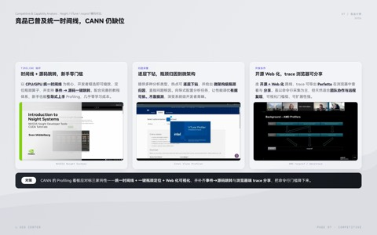
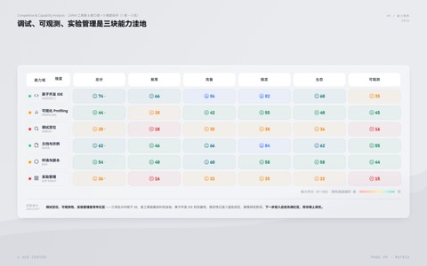
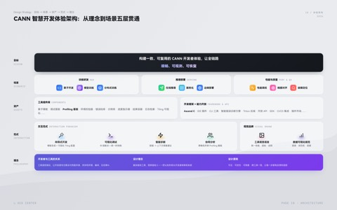

Product / Design · 28 pages
CANN DesignConcept 2026
封面、分析、竞品、旅程、画像、路线图与黑底设计点等多页模板预览。点击整张卡片，在新标签页浏览完整网页 PPT。
打开完整模板Report PPT Skill 为产品、设计和研究汇报提供统一的视觉系统、组件与交互 runtime。先浏览下方模板，再把对应提示词复制给你的 AI 编程助手即可安装使用。
卡片内预览了多种页面类型；点击整张卡片，在新标签页浏览完整网页 PPT。
请安装这个全局 Claude Code Skill： https://github.com/SchihHsin/report-ppt-skill 将仓库克隆到 ~/.claude/skills/report-ppt-skill；若该目录已是这个仓库，则执行 git pull 更新。请保留本地未跟踪文件，不要修改当前项目文件。 安装后，创建 ~/.claude/commands/report-ppt-skill.md，使它读取并使用 ~/.claude/skills/report-ppt-skill/SKILL.md，且将用户输入的参数作为本次汇报需求。这样我可以通过 /report-ppt-skill 来调用它。 确认 Skill 文件和命令文件都存在，并读取它们以确认安装可用。
请安装这个全局 OpenCode Skill： https://github.com/SchihHsin/report-ppt-skill 将仓库克隆到 ~/.config/opencode/skills/report-ppt-skill；若该目录已是这个仓库，则执行 git pull 更新。请保留本地未跟踪文件，不要修改当前项目文件。 安装后，创建 ~/.config/opencode/command/report-ppt-skill.md，使它读取并使用 ~/.config/opencode/skills/report-ppt-skill/SKILL.md，且将用户输入的参数作为本次汇报需求。这样我可以通过 /report-ppt-skill 来调用它。 确认 Skill 文件和命令文件都存在，并读取它们以确认安装可用。
请安装这个全局 Codex Skill： https://github.com/SchihHsin/report-ppt-skill 将仓库克隆到 ~/.codex/skills/report-ppt-skill；若该目录已是这个仓库，则执行 git pull 更新。请保留本地未跟踪文件，不要修改当前项目文件。 安装后，创建 ~/.codex/commands/report-ppt-skill.md，使它读取并使用 ~/.codex/skills/report-ppt-skill/SKILL.md，且将用户输入的参数作为本次汇报需求。这样我可以通过 /report-ppt-skill 来调用它。 确认 Skill 文件和命令文件都存在，并读取它们以确认安装可用。
在 Claude Code、OpenCode 或 Codex 的输入框键入 /report-ppt-skill，再补充主题、受众、素材与页数要求。